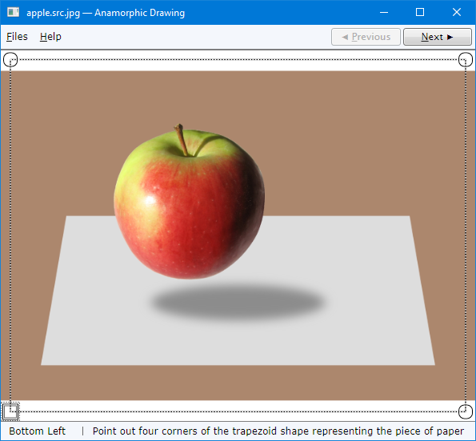
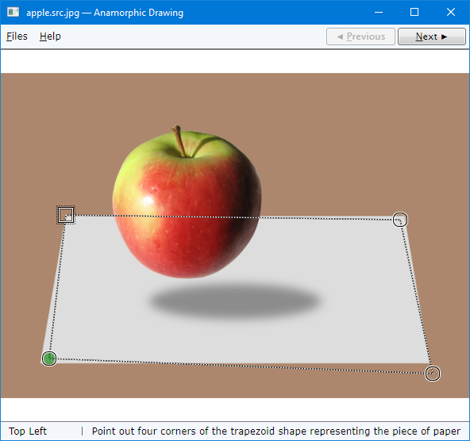
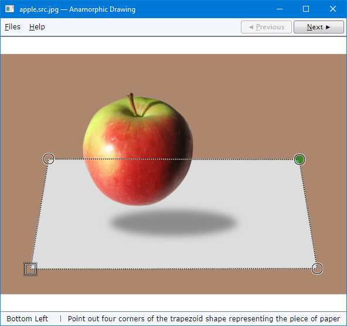
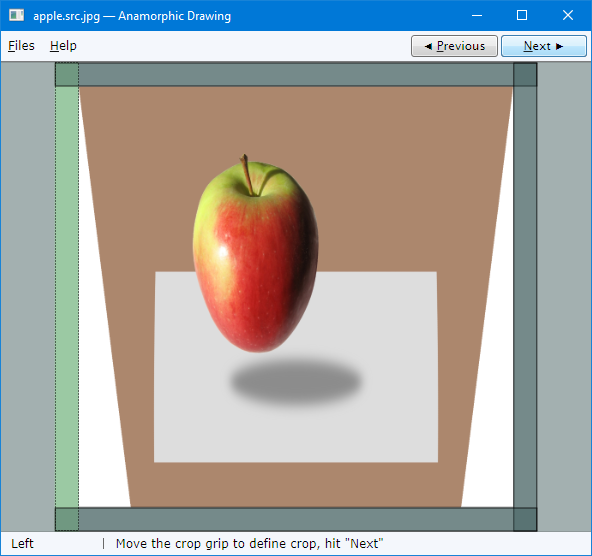
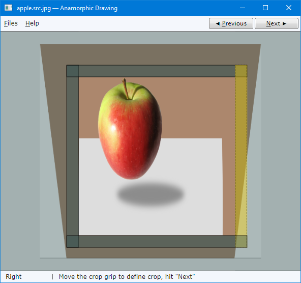
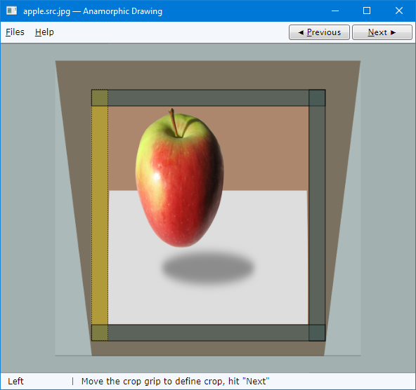
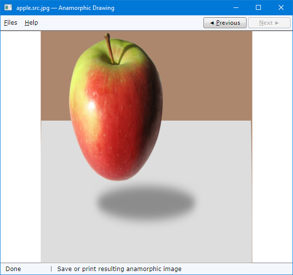

Anamorphic Drawing application helps to produce one of the anamorphic illusions: a drawing printed on a piece of paper. When it is viewed from a specially selected vantage point, it shows an image of a rectangular piece of paper shown in perspective and some objects placed on top of near it, distorted to compensate the perspective projection. As a result, it produces the result of an image “sticking out” of the piece paper on which it is seemingly drawn.
If some real object is placed on top of a piece of paper, so part of its background represents the image of a piece of paper and part of it is the image of the other object, it produces the effect of “impossible picture” in the spirit of Maurits Escher.
Presently, one can find many intricate images demonstrated by authors on youtube.
The idea is to photograph a rectangular piece of paper placed on a desk in a position where the perspective image of this piece is shown as a symmetric trapezoidal shape. If we transform the image of this photographed piece the way the trapezoidal shape gets the shape and size of the original piece of paper, place it on the desk in the same exact position and photograph it again from the same point, then, quite obviously, we obtain an identical image of this piece of paper.
If we have some other object placed over the piece of paper in first place, it will be transformed with “inverse perspective”, as if it was shown as an image projected onto the plane perpendicular to the axis of view. While non-transformed image would produce the impression of a photograph or a drawing on a piece of paper lying on a desk, transformed image will break this impression and produce the impression of an object which “sticks out” of the plain of the drawing.
The image can also be printed in very pale tones, possibly after contouring operation. In this case, the user can augment the print with some manual drawing or imitation of it, to produce the impression of even “more impossible” image: a manually crafted drawing “breaking out” the plain of the drawing paper.
Photograph the object on some rectangular piece of paper. Make sure that the edge of the piece of paper is parallel to the lower boundary of the frame and looks symmetric: . This requirement is approximate. Use a tripod. When the picture is taken, don’t move the tripod and mark the location of the piece of paper. You will need the same locations when you photograph the result.
Make sure your picture aspect ratio is the same as of the piece of paper photographed. If needed, crop the picture to required aspect ratio using any suitable image editor.
Load your source picture by AnamorphicDrawing.exe:

Mark four corners of the image of the paper by placing corresponding corner grips. You can quickly start by clicking on each corner clockwise, starting from the top-left one. Don't worry about accuracy: you can fix it later:

Using Tab key or mouse, activate each of the corner grips and adjust their locations accurately, using arrow keys:

The adjustment of the grip position can be performed quickly but with the accuracy of one screen pixel — that’s why it will be the best to work with maximizes main application window. There are four steps of the motion; please see the detailed description in the documentation on the user interface.
Hit "Next" to obtain an anamorphic image. The piece of paper is transformed to appear as a rectangular shape with the same aspect ratio as the source image:

Note that the shape of the apple becomes not only elongated, but it is also wider on the top end. This is natural: normal perspective projection makes the image foreshortened, with reduced sizes of more distant parts of the object. No wonder, our reverse perspective transform should do the opposite.
Move four crop grips to define crop:

Now a crop is defined, matching the edges of the piece of paper. On this image, one can see that the transformed image is not strictly rectangular. This is the effect of some distortion in optics.
Hit “Next”:

Now the anamorphic image is cropped and scaled. You can save it or, optionally, print out immediately:

The image should be scaled for printing, to approximately match the size of the original piece of paper which was photographed. Anamorphic image has is considerably taller than this piece of paper.
For good results, it’s better to keep the perspective moderate; otherwise anamorphic image comes out too tall, which, in turn, leads to high distortions.
The printed image can be used as it is. Alternatively, the same image can be processed to obtain contours of the image, which can be made very pale, to serve as a convenient pad for manual drawing. The first image, full-colored one, can be used as a reference, a model for drawing.
The picture on paper is prepared. Then it needs to be cut out to remove background areas. On the pictures shown above, this is the brown-colored area.
The anamorphic image can now be photographed. Assuming the tripod is still in the same position, and the zoom level of the lens is the same as in first place, we can place resulting print using the same position and orientation as the original image.
The transform and cropping are defined by the aspect ratio of the image and the user selection using grips. Each grip can be selected, one at a time. The description of a currently selected grip is shown in the status bar. Grips can be selected by a mouse click or using the Tab key, Shift+Tab for in-reverse motion.
When a grip is selected, it can be moved by the arrow keys.
Grip motion keyboard assignments can be easily remembered: Shift and Control have the same weight, and Alt has double weight; and a combination of 2 or 3 keys increases step, depending on the keys weights.
Four corner grips are named “Top Left”, “Top Right”, “Bottom Right” and “Bottom Left” are visited using the Tab key in this order. For example, see the picture shown above.
A grip changes its appearance depending on its state:
Keyboard Assignments:
Four crop grips, “Left”, “Top”, “Right” and “Bottom” (visited using the Tab key in this order) combine color changes depending on the state: if a grip is selected, its color becomes lighter; if mouse is over, the color tone becomes warmer. For example, see the picture shown above.
Keyboard Assignments: